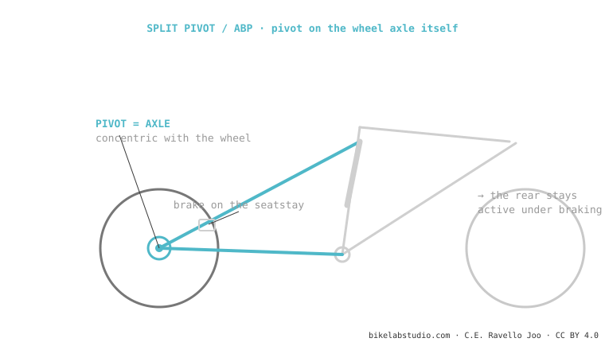

The Split Pivot (by Dave Weagle) and Trek's ABP are the same thing with a different name: a pivot concentric with the wheel axle. By separating the brake caliper from the axle's movement, the suspension stays active under braking (reduced anti-rise). The leverage ratio and anti-squat are set by the rest of the linkage. Used by Trek, Devinci and Salsa. It is one of the suspension systems.
Its trick is a single detail of location: putting the pivot exactly where the wheel rotates. And that detail changes how the bike feels under braking.

On many single pivots, braking compresses and "locks up" the suspension (high anti-rise). By putting the pivot concentric with the axle and mounting the caliper on the seatstay, the ABP partly decouples the brake force from the wheel's movement: the rear keeps soaking up bumps while you brake. That is the whole purpose of the system.
Yes, same concept, different name. Split Pivot is the patent; ABP is Trek's brand.
ABP: pivot on the axle (concentric). Horst: pivot on the chainstay, ahead of the axle. Different geometry.
Tell us the model and we'll tell you its curve and setup. Message us on WhatsApp
© 2026 BikeLab Studio. Content under CC BY 4.0: you may copy, translate and publish it, even for commercial purposes. Citation is mandatory. Without attribution, the license terminates automatically (CC BY 4.0, §6.a) and the use becomes copyright infringement: we request the removal of the content and its deindexing. · Design and ownership: Carlos Ravello Joo